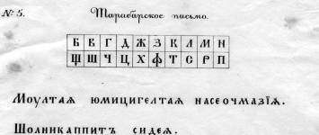

Литорея
Тарабарская грамота
Что такое литорея?
Литоре́я (от лат. littera — буква) — вид шифровального письма, которое употреблялось в древнерусской рукописной литературе.
Как это выглядит?
Один из примеров тарабарского письма, относящегося к простым литореям
Откуда появилось?
Известна была эта тайнопись ещё в 15 веке. Её называли также литореей или риторским письмом. Сначала тарабарская грамота служила дипломатической шифровкой. Потом долгое время использовалась старообрядцами в их тайной переписке. Название же риторское письмо делает возможным предположение о том, что эта тайнопись воспринималось как письмо риторов, учёных книжников.
Суть простыми словами?
Это, по-существу, не шифрование, а намеренное искажение слов, которое могло быть и письменным, и устным: произношение (написание) задом-наперед, добавление после каждого слова (или каждого слога в слове) какого-либо условленного заранее слога, произношение слогов, образующих слова, в обратном порядке.
Алгоритмы шифрования
Разбиение на слоги (Затейное письмо)
Секрет данного способа заключался в простой перестановке, когда текст сообщения разбивался на слоги, и последние переставляли вместе с буквами по заранее заданному принципу, иногда каждая буква заменялась своим особым, причудливым знаком.
Пример:
| Шаги | Описание | Изменения |
|---|---|---|
| 1 | Берем фразу, которую хотим закодировать | ВОЗЬМИ СУМУ |
| 2 | Разбиваем на слоги | ВОЗЬ-МИ СУ-МУ |
| 3 | Берем слово, которое будет ключом | СЕКРЕТ |
| 4 | Разбиваем ключ по слогам | СЕ-КРЕТ |
| 5 | Перемешиваем слоги, начиная с ключа | СЕ-ВОЗЬ-КРЕТ-МИ-СЕ-СУ-КРЕТ-МУ |
| 6 | Итог | СЕВОЗЬКРЕТМИСЕСУКРЕТМУ |
Шифратор
Результат:
Зашифруйте сообщение чтобы увидеть результат
Дешифратор
Результат:
Дешифруйте сообщение чтобы увидеть результат